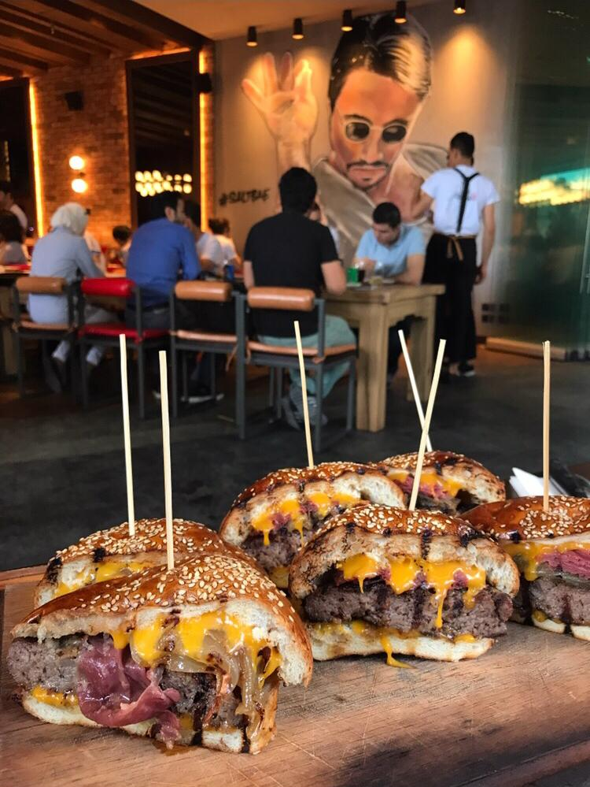
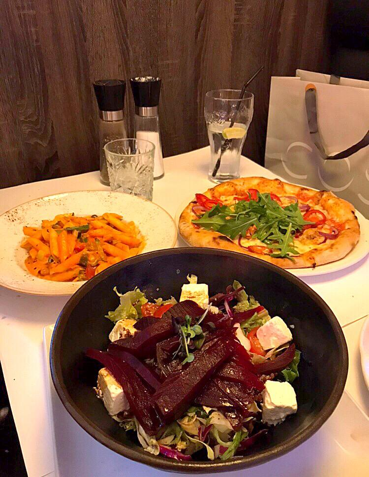
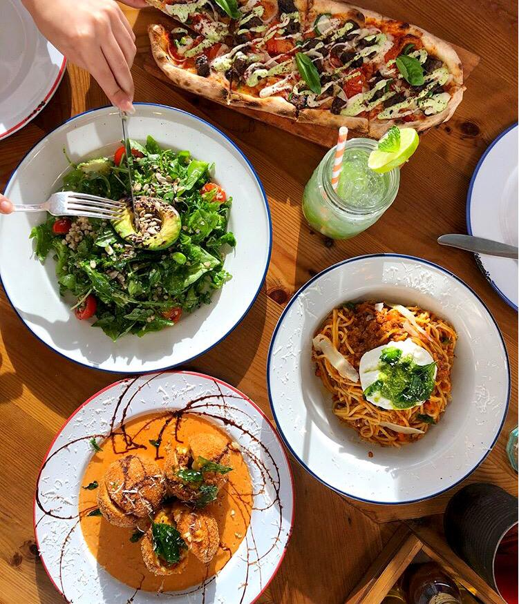
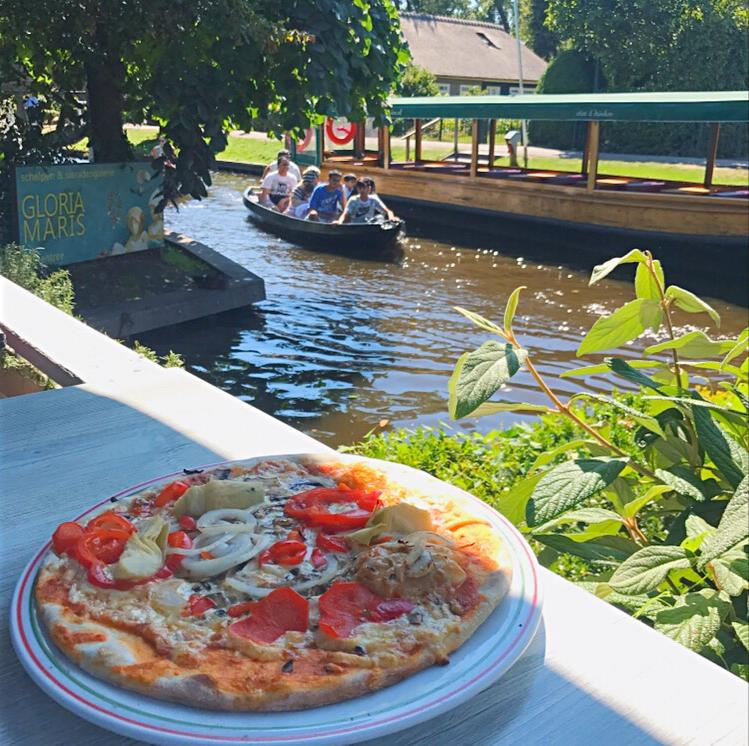
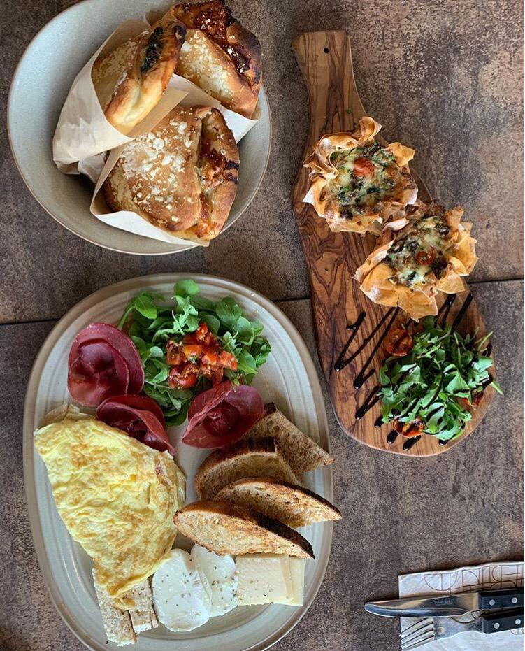
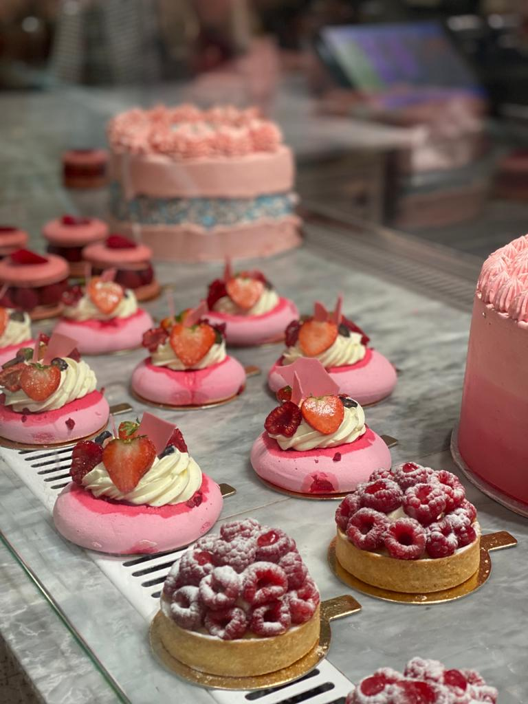

June 2018
Turkey has a wide range of choices of food but they are most famous for their tradtional breakfast and grills. The traditional Turkish breakfast consists of range of cheese, jam ,sausages , special egg mix, nuts, fruits and is always served with their signature tea. Moving on to the grills, Turkey is famous for both their meat and chicken Kebab as well as doner and iskender kebab which consists of layers of bread, doner, tomato sauce and yogurt on the side with the drizzle of hot butter. One of the places that I recommend to try is the famous resturaunt Nusr-Et , that serves steaks and burgers. As shown in the picture I grabbed, the burger was one of the most appetizing burger that I have ever tried so far. The prices in Turkey are really managable especially when you are dining from their local restaurants. Desserts and sweet dishes are also famous in Turkey. They consists of traditional dishes such as Kunafas and Baqlawas.
August 2019
I can still remember the taste of this perfect hotdog sandwich that had crispy onions and cheese as toppings. It was deliciously good but sadly I don't remember the restaurant's name. However, it was in the centre of Copenhagen. The fourth picture was a protien bowl that i have tried in the food hall of Tivoli Gardens, this dish was really good and they had variety of options that you can mix and match from, and the prices were suitable. One last tip is to never choose a restaurant to dine in without checking its average price. Overall denmark is one of the most expensive countries I have visited according to living and dining.
December 2018
Kuwait, it's very known that kuwait city is famous with their food, restaurants and their tasty cuisines. As you can see in the picture the delicious types of food. Starting with the second photo it was a restaurant called " Coca Room " that served the amazing egg benedict with short ribs on top and hollandise sauce. The dish was something i'd eat every morning and the restaurant’s atmosphere was soothing, as such the prices therefore were average to high. I'd recommend trying their local food as well from a market I mentioned in my experience in Kuwait there you can find their local food with suitable prices for tourits. The last picture is for a resturaint in " The Avenues Mall " called Chocomelt. They had this amzing dessert which was layers of chocoalte cake , caramel , ice cream and lotus crunches with the hot chocolate sauce they pour on. I can still see the picture of the ice cream melting when the chocoate is poured on in my mind. Overall prices in Kuwait are average to high depending on the place and the resturaunt you are dining in.
July 2016
Amsterdam. Their fries was so good and you can find it in all places around the centre. Their fish and chips was good but not as expected. Moving on, the first picture was in Geithoorn the amazing place I mentioned in my experience to Amsterdam. There are many resturaunt that has a direct view to the canal and they serve italian food such as pizzas and pastas. The food there was not bad but the restaurants are expensive due to being one of the tourists attraction. The third picture was in one of supermarkets that had an option to create a healthy Granola bowl where there were choices of toppings you can add as fruits, nuts, yogurt etc. It was tasty, healthy and affordable. There are also many cheese factories that you might visit while touring don't forget to check them out and eat some samples they serve . It was a trip full of cheese tasting.
April 2019
Sweden , i've been there only once but tried to have as much food as I can. The first picture was breakfast in one of the the centre restaurants, they had a diverse menu and as you can see they served us omlette with different collection of cheese, turkey and freshly baked kinds of bread. The second picture as shown above was waffles with chocolate sauce and strawberry toppings, they were so delightful and it was in the old town. Overall, I think that the food in Sweden was not something special , maybe the resturaunts i tried were not that satisfying and I didn't have much time to try a variety of other resturaunts
December 2019
The options of food in London is wide and varying. My favorite food type in London is for breakfast. There are many restaurants that I recommend such as Granger&co, “Eggslut”, “Nac”, “Elan Cafe”. These restaurants are dine in restaurants. For food to go, the most famous breakfast restaurant/cafe is Pret A manger. They also have some snacks which could be useful for the day. For Lunch and dinner, restaurants are infinitive. You can find restaurants depending on the cuisine you would like to dine in. For example, “Burger and Lobster” is a famous restaurant in London that sells burgers and seafood. “Khan” is an amazing restaurant that serves Indian cuisine. You can always stop for snacks from other famous cafes such as Marks&Spencers and Debenhams between your shopping experience. For dessert, I would recommend to pay a visit to Elan Cafe, L’eto Cafe and Creme cookies. Food in London is a bit costly depending on where you dine in. Overall, you will find no difficulties in finding food in London. There are also good to go food stands in markets such as Portobello.